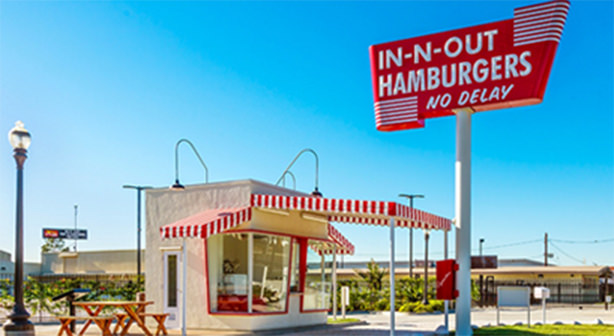
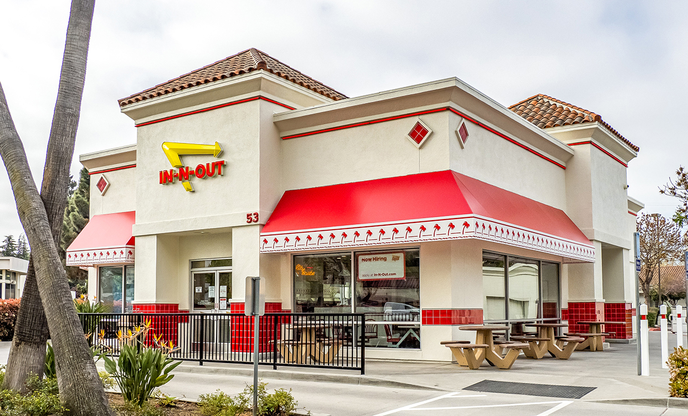

In-N-Out Burger is an American regional chain of fast food restaurants primarily located in California and the Southwest. The first In-N-Out Burger opend in Baldwin Park, California, in 1948 and was founded by Harry Snyder and Esther Snyder. You can click here to find out more about IN-N-OUT Burger.
 